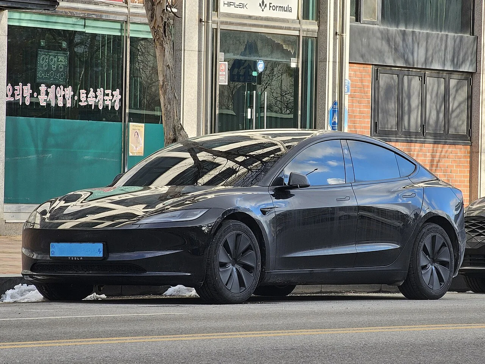

▲ 매끄럽게 다듬어진 전면부가 특징인 테슬라 모델3 하이랜드 ⓒ Chanokchon, Wikimedia Commons (CC BY-SA 4.0)
테슬라의 스테디셀러 세단 '모델3'가 페이스리프트를 거친 '하이랜드' 사양으로 국내 판매를 이어가고 있습니다. 2023년 해외 공개 이후 2024년 국내에 정식 출시된 모델3 하이랜드는, 외관 디자인 개선은 물론 공력 성능과 승차감까지 손본 것이 특징입니다. 국내외 정보를 취합해 무엇이 달라졌는지 정리했습니다.
1. 외관 디자인 — 매끄러워진 전면부, 역대 최저 공력계수

▲ 간결하게 정리된 범퍼 라인이 돋보이는 모델3 하이랜드의 후면부 ⓒ Chanokchon, Wikimedia Commons (CC BY-SA 4.0)
겟차 등 국내 매체에 따르면, 하이랜드 사양은 기존 모델3 대비 전면부 디자인을 매끄럽게 다듬고 헤드램프를 더 날렵하게 손봤으며, 범퍼 라인도 간결하게 정리해 공기저항을 최소화하는 데 집중했습니다. 그 결과 공기저항계수(Cd)는 0.219까지 낮아졌는데, 이는 역대 테슬라 양산차 중 가장 낮은 수치로 기록됩니다. 공력 성능 개선은 곧바로 주행거리와 고속 주행 시 정숙성 향상으로 이어집니다.
2. 실내 & 주행거리 — 뒷좌석도 스크린으로 조작

▲ 모델3 하이랜드 측면부. 롱레인지 트림 기준 1회 충전 480km 이상을 주행할 수 있다 ⓒ Damian B Oh, Wikimedia Commons (CC BY-SA 4.0)
실내에서 가장 눈에 띄는 변화는 기존 모델3에는 없던 8인치 후석 전용 터치스크린입니다. 뒷좌석 탑승자도 공조 조절과 엔터테인먼트 기능을 직접 제어할 수 있게 되면서 실내 편의성이 한층 개선됐습니다. 새롭게 다듬어진 서스펜션 시스템은 노면 충격을 더 부드럽게 흡수해, 이전 모델보다 안락한 승차감을 제공한다는 평가를 받고 있습니다. 주행거리는 롱레인지 트림 기준 1회 충전 시 480km 이상을 확보합니다.
트림 구성은 크게 후륜구동(RWD)과 롱레인지 사륜구동(AWD) 두 가지로 나뉩니다. 국내 커뮤니티 클리앙에 올라온 RWD 실시승 후기에 따르면, 원 페달 드라이빙 특유의 회생제동 감각과 기본기에 충실한 주행 질감이 진입 가격대에서도 충분히 만족스럽다는 반응이 나왔습니다.
3. 총평 — 여전히 강력한 스테디셀러

▲ 모델3 하이랜드에 적용된 프런트 카메라 클러스터 ⓒ Mliu92, Wikimedia Commons (CC BY-SA 4.0)
출시된 지 시간이 꽤 지났음에도 모델3 하이랜드는 여전히 국내 수입 전기 세단 시장에서 스테디셀러 자리를 지키고 있습니다. 낮아진 공력계수 덕분에 확보한 주행거리, 후석까지 배려한 편의 사양, 진입 장벽이 낮은 RWD 트림까지 갖추면서 첫 전기차 구매를 고민하는 소비자에게도 여전히 유효한 선택지로 꼽힙니다.